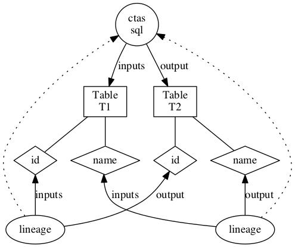

Hive Model
The default hive modelling is available in org.apache.atlas.hive.model.HiveDataModelGenerator. It defines the following types:
hive_db(ClassType) - super types [Referenceable] - attributes [name, clusterName, description, locationUri, parameters, ownerName, ownerType] hive_storagedesc(ClassType) - super types [Referenceable] - attributes [cols, location, inputFormat, outputFormat, compressed, numBuckets, serdeInfo, bucketCols, sortCols, parameters, storedAsSubDirectories] hive_column(ClassType) - super types [Referenceable] - attributes [name, type, comment, table] hive_table(ClassType) - super types [DataSet] - attributes [name, db, owner, createTime, lastAccessTime, comment, retention, sd, partitionKeys, columns, aliases, parameters, viewOriginalText, viewExpandedText, tableType, temporary] hive_process(ClassType) - super types [Process] - attributes [name, startTime, endTime, userName, operationType, queryText, queryPlan, queryId] hive_principal_type(EnumType) - values [USER, ROLE, GROUP] hive_order(StructType) - attributes [col, order] hive_serde(StructType) - attributes [name, serializationLib, parameters]
The entities are created and de-duped using unique qualified name. They provide namespace and can be used for querying/lineage as well. Note that dbName, tableName and columnName should be in lower case. clusterName is explained below.
- hive_db - attribute qualifiedName - <dbName>@<clusterName>
- hive_table - attribute qualifiedName - <dbName>.<tableName>@<clusterName>
- hive_column - attribute qualifiedName - <dbName>.<tableName>.<columnName>@<clusterName>
- hive_process - attribute name - <queryString> - trimmed query string in lower case
Importing Hive Metadata
org.apache.atlas.hive.bridge.HiveMetaStoreBridge imports the Hive metadata into Atlas using the model defined in org.apache.atlas.hive.model.HiveDataModelGenerator. import-hive.sh command can be used to facilitate this. The script needs Hadoop and Hive classpath jars. * For Hadoop jars, please make sure that the environment variable HADOOP_CLASSPATH is set. Another way is to set HADOOP_HOME to point to root directory of your Hadoop installation * Similarly, for Hive jars, set HIVE_HOME to the root of Hive installation * Set environment variable HIVE_CONF_DIR to Hive configuration directory * Copy <atlas-conf>/atlas-application.properties to the hive conf directory
Usage: <atlas package>/hook-bin/import-hive.sh
The logs are in <atlas package>/logs/import-hive.log
If you you are importing metadata in a kerberized cluster you need to run the command like this:
<atlas package>/hook-bin/import-hive.sh -Dsun.security.jgss.debug=true -Djavax.security.auth.useSubjectCredsOnly=false -Djava.security.krb5.conf=[krb5.conf location] -Djava.security.auth.login.config=[jaas.conf location]
- krb5.conf is typically found at /etc/krb5.conf
- for details about jaas.conf and a suggested location see the atlas security documentation
Hive Hook
Hive supports listeners on hive command execution using hive hooks. This is used to add/update/remove entities in Atlas using the model defined in org.apache.atlas.hive.model.HiveDataModelGenerator. The hook submits the request to a thread pool executor to avoid blocking the command execution. The thread submits the entities as message to the notification server and atlas server reads these messages and registers the entities. Follow these instructions in your hive set-up to add hive hook for Atlas:
- Set-up atlas hook in hive-site.xml of your hive configuration:
<property>
<name>hive.exec.post.hooks</name>
<value>org.apache.atlas.hive.hook.HiveHook</value>
</property>
<property>
<name>atlas.cluster.name</name>
<value>primary</value>
</property>
- Add 'export HIVE_AUX_JARS_PATH=<atlas package>/hook/hive' in hive-env.sh of your hive configuration
- Copy <atlas-conf>/atlas-application.properties to the hive conf directory.
The following properties in <atlas-conf>/atlas-application.properties control the thread pool and notification details:
- atlas.hook.hive.synchronous - boolean, true to run the hook synchronously. default false. Recommended to be set to false to avoid delays in hive query completion.
- atlas.hook.hive.numRetries - number of retries for notification failure. default 3
- atlas.hook.hive.minThreads - core number of threads. default 5
- atlas.hook.hive.maxThreads - maximum number of threads. default 5
- atlas.hook.hive.keepAliveTime - keep alive time in msecs. default 10
- atlas.hook.hive.queueSize - queue size for the threadpool. default 10000
Refer Configuration for notification related configurations
Column Level Lineage
Starting from 0.8-incubating version of Atlas, Column level lineage is captured in Atlas. Below are the details
Model
- ColumnLineageProcess type is a subclass of Process
- This relates an output Column to a set of input Columns or the Input Table
- The Lineage also captures the kind of Dependency: currently the values are SIMPLE, EXPRESSION, SCRIPT
- A SIMPLE dependency means the output column has the same value as the input
- An EXPRESSION dependency means the output column is transformed by some expression in the runtime(for e.g. a Hive SQL expression) on the Input Columns.
- SCRIPT means that the output column is transformed by a user provided script.
- In case of EXPRESSION dependency the expression attribute contains the expression in string form
- Since Process links input and output DataSets, we make Column a subclass of DataSet
Examples
For a simple CTAS below:
create table t2 as select id, name from T1
The lineage is captured as

Extracting Lineage from Hive commands
* The HiveHook maps the LineageInfo in the HookContext to Column lineage instances
* The LineageInfo in Hive provides column-level lineage for the final FileSinkOperator, linking them to the input columns in the Hive Query
NOTE
Column level lineage works with Hive version 1.2.1 after the patch for HIVE-13112 is applied to Hive source
Limitations
- Since database name, table name and column names are case insensitive in hive, the corresponding names in entities are lowercase. So, any search APIs should use lowercase while querying on the entity names
- The following hive operations are captured by hive hook currently
- create database
- create table/view, create table as select
- load, import, export
- DMLs (insert)
- alter database
- alter table (skewed table information, stored as, protection is not supported)
- alter view